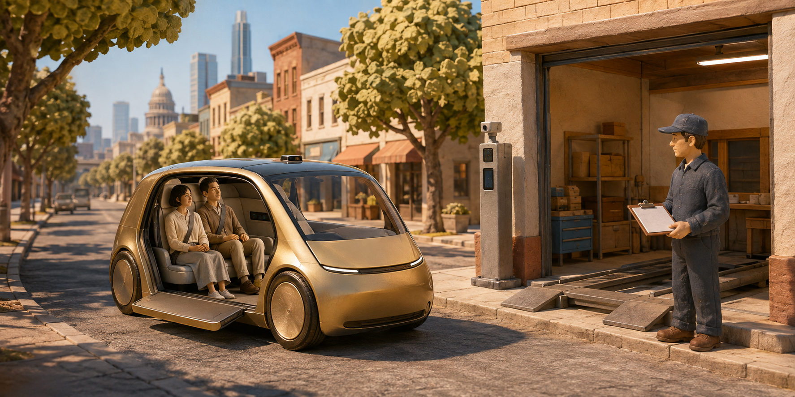

테슬라, 운전대 없는 Cybercab 유료 운행 시작…하루 뒤 미국 안전기준 조사
테슬라가 미국 현지시간 9월 3일 텍사스주 오스틴에서 운전대와 페달이 없는 Cybercab의 유료 운행을 시작했다. 다음 날 미국 도로교통안전국은 이 차량이 연방 안전기준을 충족한다는 테슬라의 자기인증을 조사하겠다고 발표했다. 전시장의 미래형 자동차가 실제 승객을 받는 단계로 옮겨 간 것은 분명하다. 다만 서비스 개시와 안전기준 검증 완료를 같은 사건으로 읽어서는 안 된다.

새로 시작한 것은 로보택시 전체가 아니라 전용 차량의 유료 운행
Axios의 출시 보도에 따르면 승객은 테슬라 Robotaxi 앱에서 Cybercab을 호출할 수 있게 됐다. 기존 승용차를 무인 서비스에 넣는 것과 달리, 이번 차량은 처음부터 운전자를 태우지 않는 승객 운송을 전제로 만든 전용 차종이다. 발표 행사와 앱을 통한 상업 운행이 연결됐다는 점이 이번 소식의 핵심이다.
여기서 Robotaxi는 서비스 이름이고 Cybercab은 그 서비스에 들어오는 차량 이름이다. 테슬라 공식 안내는 기존 Model Y 서비스와 Cybercab을 구분한다. Cybercab은 두 사람이 타는 차이며, 현재 이용 지역은 오스틴의 일부 구역이다. 다른 도시에서 테슬라의 무인 호출 서비스를 이용할 수 있다고 해서 그곳에도 Cybercab이 배치됐다는 뜻은 아니다.
이 구분은 사업 규모를 읽을 때도 중요하다. 기존 차량을 합친 서비스 전체의 운행 거리와 새 차종만의 운행 거리는 서로 다른 기록이다. 로보택시라는 큰 이름 아래 쌓인 경험을 전용 무인 차량의 독립적인 안전 실적으로 그대로 옮기면, 무엇이 새로 검증돼야 하는지 놓치게 된다. 독자가 비교해야 할 대상은 브랜드 하나가 아니라 차종·소프트웨어·운행 조건의 조합이다.
미국 현지 날짜 기준
유료 운행 다음 날, 인증 근거를 묻는 조사가 시작됐다
전용 무인 차량 Cybercab이 실제 승객을 받는 단계로 진입
기존 안전기준을 충족한다고 판단한 기술 자료와 절차를 확인
운행 시작 ≠ 검증 완료 · 조사 착수 ≠ 위법 확정
운전대가 사라지면 승객 경험뿐 아니라 실패에 대응하는 방식도 달라진다
Cybercab의 눈에 띄는 변화는 운전 공간을 승객 공간으로 바꿨다는 점이다. 하지만 기술적으로 더 중요한 변화는 문제가 생겼을 때 탑승자가 운전대를 잡아 상황을 넘겨받는 방식을 기대할 수 없다는 것이다. 그래서 이 차량을 이해하는 질문도 ‘얼마나 사람처럼 운전하나’에서 ‘사람이 운전하지 않아도 운영 전체가 어떻게 대응하나’로 넓어져야 한다.
테슬라는 FAQ에서 차량 배정이 초기에는 이용 가능한 차와 탑승 인원에 따라 정해진다고 설명한다. 앱을 열었다고 반드시 Cybercab을 선택해서 탈 수 있는 구조로 단정해서는 안 된다. 또한 호출 가능한 구역은 도시 전체와 같지 않다. 공개 시연 영상에 나온 도로와 실제 영업 구역, 앞으로 확대하겠다는 계획을 따로 보는 것이 출시 범위를 정확히 읽는 방법이다.
테슬라의 이용 지원 문서는 탑승 중 지원팀에 연락하거나 이용 뒤 문제를 접수하는 경로를 안내한다. 차량에서 사람이 직접 운전하지 않는다는 것과 서비스 뒤에 사람의 지원 체계가 전혀 없다는 것은 다른 말이다. 다만 지원 연락 기능이 존재한다는 사실만으로 원격 운전의 범위나 개입 빈도를 알 수는 없으며, 이 글도 그 숫자를 추정하지 않는다.
이 때문에 출시 직후의 짧은 체험담만으로 전체 성능을 결론 내리기 어렵다. 매끄럽게 끝난 한 번의 주행은 그 경로에서의 경험을 보여 주지만, 차량 고장이나 통신 문제, 예상하지 못한 도로 통제까지 얼마나 일관되게 처리하는지는 별도의 기록이 필요하다. 멋진 영상과 실제 서비스 품질은 서로 관련은 있어도 같은 측정치는 아니다.
미국 당국이 묻는 것은 ‘기준을 지켰다고 판단한 근거’
NHTSA의 공식 발표에서 조사 형식은 Audit Query, 즉 인증의 근거를 확인하는 조사다. 기관은 테슬라가 전통적인 사람용 조작 장치가 없는 차량을 연방 자동차 안전기준에 적합하다고 본 기술 자료와 절차를 들여다보겠다고 밝혔다. 특정 기준이 이 차량에는 적용되지 않는다고 판단했는지도 조사 대상이다.
미국의 이 체계에서는 제조사가 해당 기준을 충족한다고 인증하고 규제기관이 이를 감독한다. 따라서 ‘차가 도로에 나왔다’는 사실을 ‘정부가 차의 모든 설계를 사전에 개별 승인했다’로 바꾸면 안 된다. 반대로 제조사가 스스로 인증한다는 말도 감독이나 책임이 없다는 의미는 아니다. 이번 사건은 바로 그 판단의 근거를 감독기관이 확인하기 시작한 경우다.
9월 4일 발표는 위법을 확정한 최종 판단이 아니며 그 자체가 운행 중단 명령도 아니다. 보도 제목에 ‘조사’라는 말이 들어갔다고 사고 원인이 밝혀졌다고 생각해서는 안 된다. 현재 확인된 쟁점은 인증의 적절성이다. 앞으로 확보할 자료와 기관의 판단에 따라 결론이 달라질 수 있으므로, 결과가 나오기 전에 성공이나 실패 어느 쪽으로도 확정하기 어렵다.
이 지점은 자율주행 소식을 단순한 찬반으로 읽는 습관을 바꿔 준다. 새로운 차량이 유용한 이동 수단일 가능성과 지금의 인증 논리가 충분한지 여부는 동시에 검토할 수 있다. 제품이 혁신적이라는 평가가 규정 준수의 증거를 대신하지 않으며, 감독기관의 질문이 있다는 사실도 기술 전체의 무용함을 증명하지 않는다.
규정을 바꾸는 작업과 현재 규정은 동시에 존재한다
NHTSA는 운전자가 없는 차량을 고려한 안전기준 개정도 추진하고 있다. 브레이크 페달 관련 기준 개정 안내는 사람이 발로 조작하는 기존 설계 전제를 자율주행 시대에 맞춰 검토하는 흐름을 보여 준다. 그러나 개정 작업이 진행 중이라는 사실은 바뀐 규정이 이미 적용된다는 뜻이 아니다. 기관은 이번 조사 발표에서도 기존 기준의 효력이 유지된다고 명시했다.
이 차이를 놓치면 서로 반대되는 두 주장에 쉽게 끌려간다. 하나는 미래에 바뀔 규정이니 지금도 적용할 필요가 없다는 주장이고, 다른 하나는 기존 자동차와 모양이 다르니 무조건 불법이라는 주장이다. 실제 쟁점은 어느 기준을 어떤 방식으로 충족했는지다. 외형에 대한 인상보다 시험 근거와 적용 논리를 봐야 하는 이유다.
텍사스주 자동차국의 제도 안내도 별도의 층을 보여 준다. 주에서는 2026년 5월 28일부터 상업용 자동운전 사업자에게 유효한 운행 허가를 요구하며, 허가를 제한하거나 취소할 수 있다. 도로 위 교통법 집행은 주 공공안전국과 지역 법집행기관이 맡는다. 연방 차원의 차량 기준과 주 차원의 운행 관리는 같은 기관의 같은 절차가 아니다.
한 가지 허가로 모든 질문에 답할 수 없다
차량 기준·영업 운영·주행 성능은 따로 확인해야 한다
특정 지역의 운행 권한은 전국·모든 상황의 자율주행 보증이 아니다
주가 상업 운행을 허용하는 절차가 있다고 해서 연방 차원의 모든 차량 기준 문제가 자동으로 끝나는 것은 아니다. 반대로 연방 기관이 인증을 조사한다고 주의 제도 전체가 사라지는 것도 아니다. 이번 뉴스는 자율주행의 기술과 제도가 한 번에 완성되는 것이 아니라 서로 다른 속도로 움직인다는 점을 구체적으로 보여 준다.
‘무인 운행’과 ‘어디서든 운행’ 사이에는 큰 차이가 있다
NHTSA의 자동화 수준 설명에서 높은 수준의 자동운전이라도 특정 서비스 구역과 조건 안에서 작동하는 경우와 모든 도로·조건에서 작동하는 경우는 구분된다. 이 글은 Cybercab에 정부가 별도 성능 등급을 부여했다고 주장하지 않는다. 공식 FAQ가 오스틴 일부를 명시한다는 점을 근거로, 이번 출시를 보편적인 전 지역 자율주행 완성으로 읽지 않는 것이다.
차량에 운전대가 없다는 외형만으로 그 차가 눈길이나 폭우, 지도 밖 지역까지 제한 없이 달릴 수 있다고 추론할 수는 없다. 반대로 특정 구역에 한정한다고 기술적 의미가 사라지는 것도 아니다. 범위를 좁혀 실제 승객 운송을 반복하는 것은 전시장에서 움직이는 시제품과 다르다. 중요한 것은 운행 가능한 조건을 투명하게 밝히고 그 조건 안에서의 결과를 검증하는 일이다.
여기서 뉴스가 앞으로 확인해야 할 숫자도 달라진다. 차량 생산 능력, 등록 차량 수, 그날 영업 중인 차량 수, 실제 유료 주행 거리는 서로 다른 지표다. 공장에서 많이 만들 수 있다는 설명만으로 호출 대기 시간이 짧아지거나 운영 비용이 낮아졌다고 결론 낼 수 없다. 이 글이 생산 목표나 등록 숫자를 실제 가동 규모로 제시하지 않은 이유다.
안전성을 비교할 때도 사고 건수만 떼어 놓기보다 얼마나 달렸는지, 어떤 도로와 시간대였는지, 어떤 사건을 포함했는지를 함께 봐야 한다. 이는 특정 회사가 더 안전하다는 결론을 미리 정하기 위한 기준이 아니다. 같은 이름의 자율주행 서비스라도 조건이 다르면 숫자가 보여 주는 의미가 달라지기 때문에 필요한 비교 원칙이다.
한국 독자에게 중요한 것은 출시 장소보다 확장 조건
오스틴의 유료 운행 소식을 한국의 즉시 도입 소식으로 읽을 근거는 없다. 이번에 확인한 공식 자료의 제공 범위는 미국의 특정 도시와 구역이다. 다만 완성차·부품·교통 서비스 업계가 볼 변화는 분명하다. 운전자를 위한 장치를 줄인 전용 차량이 실제 영업으로 들어가면서, 설계의 경제성과 서비스 운영의 신뢰성을 함께 입증해야 하는 국면이 시작됐다.
독자가 다음 보도에서 볼 핵심은 홍보 행사 규모보다 구체적인 변화다. NHTSA가 어떤 자료를 요구하고 어떤 결론을 내리는지, 실제 이용 구역이 어디까지 늘어나는지, 차종별 운행 결과가 공개되는지를 확인하면 된다. 예정된 확장과 완료된 확장을 구분하고, 제조사의 설명과 감독기관의 판단을 각각 읽으면 과장된 낙관과 과장된 공포를 모두 줄일 수 있다.
Cybercab의 이번 전환은 ‘언젠가 나올 자동차’에서 ‘실제로 요금을 받고 달리는 자동차’로 넘어갔다는 데 있다. 동시에 운전대 없는 차량의 안전기준을 어떤 근거로 충족했는지에 대한 공식 검토가 시작됐다. 상업화는 시작됐고, 검증은 진행 중이다. 이 두 사실을 함께 놓아야 이번 출시의 무게와 아직 남은 질문이 모두 보인다.